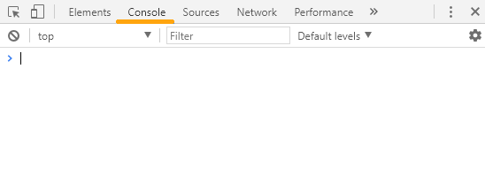

Ссылки для скачивания фотошопа и кодового редактора Sublime Text 3
Скачать Фотошоп
Скачать Sublime Text 3
Все сайты делаются при помощи HTML и CSS HTML - это язык гипертекстовой
разметки, которая позволяет размечать модули страницы сайта, состоит из тегов
которые заключаются в угловые скобки <тег>
Атрибуты тегов - это метки которые пишутся внутри тегов, позволяют расширять
возможности тегов, например изменять цвет текста. Есть теки в которых атрибуты
прописывать обязательно иначе они будут игнорироваться браузерами
.......
....
..
1. Скачать и установить весь необходимый софт для работы.
2. Ответить на вопросы в задании, вписать ответы в блог, как показано на видео.
3. Создать папку для проекта “Мой блог", в этой папке создать файл index.html
4. Сделать базовую разметку страницы, сделать секцию <section></section>.
в секции записать все ответы на вопросы, разметить текст на параграфы, заголовки, списки.
Все круто, слушал в захлеб, не терпелось приступить к выполнению домашнего
задания . После первого урока у меня уже получилась первая страница моего
блога, правда еще пока что только один голый текст, но в дальнейших уроках, я
планирую придать более красивый вид.
Вопрос по первому уроку возник только один, задал его в комментариях под видео.
Сергей в примерно через час ответил на него, на этом все. Готов проходить второй урок!
КОНСОЛЬ В БРАУЗЕРЕ
CHROME
В каждом браузере есть свой инструмент разработчика -
это то, что многие называют просто «консолью», рассмотрим
Консоль в браузере Chrome. Выглядит вот так:

Консоль в браузере Chrome
На самом деле Консоль в Chrome - это инстру-
мент, с помощью которого можно не только посмотреть на-
полнение страницы, выводимой браузером, а также суще-
ствующие ошибки (что чаще всего и делают тестировщики),
но и исправить эти ошибки намного проще и быстрее(что
чаще всего делают девелоперы), замерять различные пока-
зания и манипулировать страницей.
— клавиша F12;
— нажав одновременно клавиши Ctrl + Shift + I;
— ПКМ по элементу страницы -> Просмотреть код;
— меню браузера -> Дополнительные Инструменты ->Ин-
струменты Разработчика.
Располагаться она может внизу страницы или сбоку, можно
открепить в отдельное окно. Итак, рассмотрим по отдельности
каждую вкладку открытой консоли.
Итого в ней есть 8 вкладок, каждая из которых отображает определенные данные: